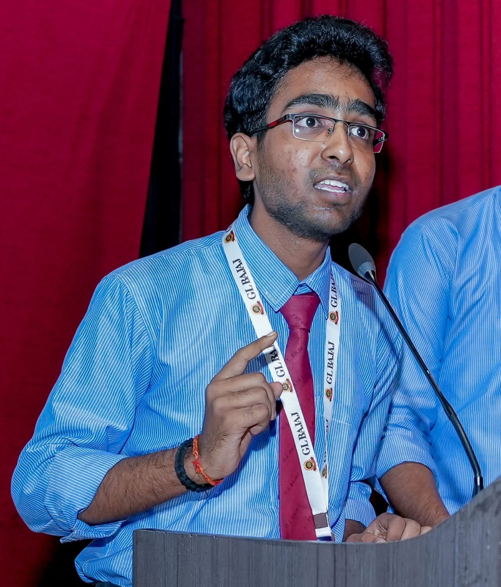

I build real-world projects and solve problems using Data Structures & Web Development.
I’m a passionate and driven aspiring software developer currently focused on building a strong foundation in Data Structures & Algorithms and Web Development. I enjoy solving problems, thinking logically, and continuously improving my skills through consistent practice and real-world projects.
I’m currently exploring technologies like C++, JavaScript, HTML, and CSS while also working on projects that help me understand how things work beyond theory. I believe in learning by doing, and I try to make every project better than the last one.
My goal is to become a skilled developer who can build impactful and efficient solutions, while constantly growing and adapting in the tech world.
Every day, I try to get 1% better than yesterday.
Completed a 1-month internship focused on web development. Built responsive websites using HTML, CSS, and JavaScript. Improved UI/UX and optimized performance.
Worked as a volunteer in the Smart India Hackathon Grand Finale. Gained exposure to teamwork and large-scale event coordination.
C++, Python, JavaScript, SQL
DSA, DBMS, OS, Computer Networks
HTML, CSS, JavaScript
Git, GitHub, VS Code,Vercel,Netlify
A C++ project that tracks study sessions, monitors distractions in real-time, and gives a focus score based on your actual behavior.
Features: - Real-time break tracking (b = break, r = resume, e = end) - Automatic distraction tracking - Focus score calculation - Clean session history with insights
A front-end clone of Myntra showcasing strong UI/UX skills, responsive design, and e-commerce layout. Built using HTML, CSS, and JavaScript.
Completed the Cloud Foundations training through AWS Academy, gaining hands-on knowledge of cloud computing concepts, AWS services, and deployment fundamentals.
Completed foundational cybersecurity training covering security concepts, threats, and best practices.
Completed the Network Security Fundamentals course from Palo Alto Networks to gain a strong understanding of network security concepts. Learned about network protocols, firewall configuration, VPNs, and threat prevention to protect systems and data.
Feel free to reach out for opportunities or collaborations.